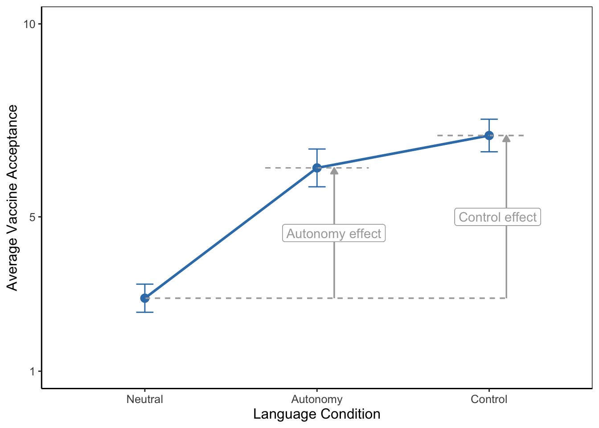
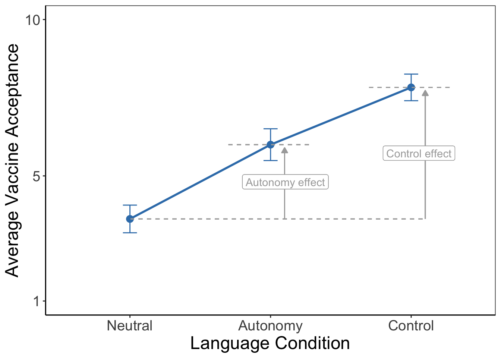
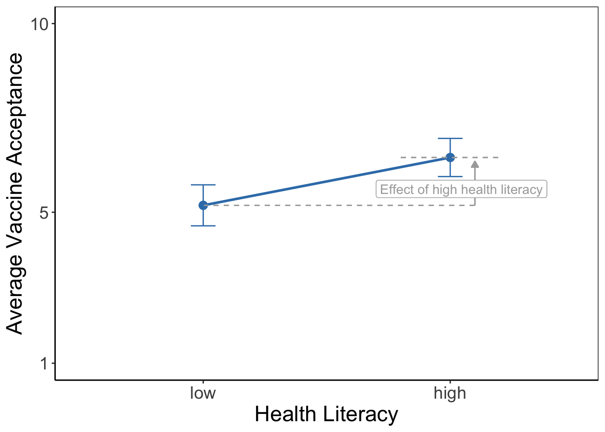
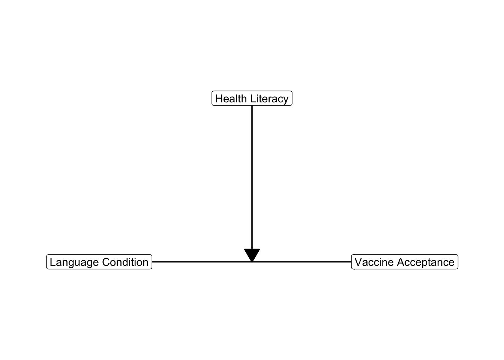
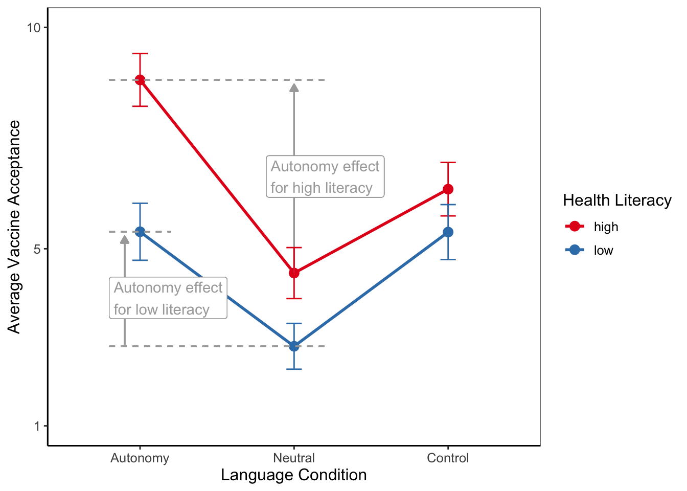
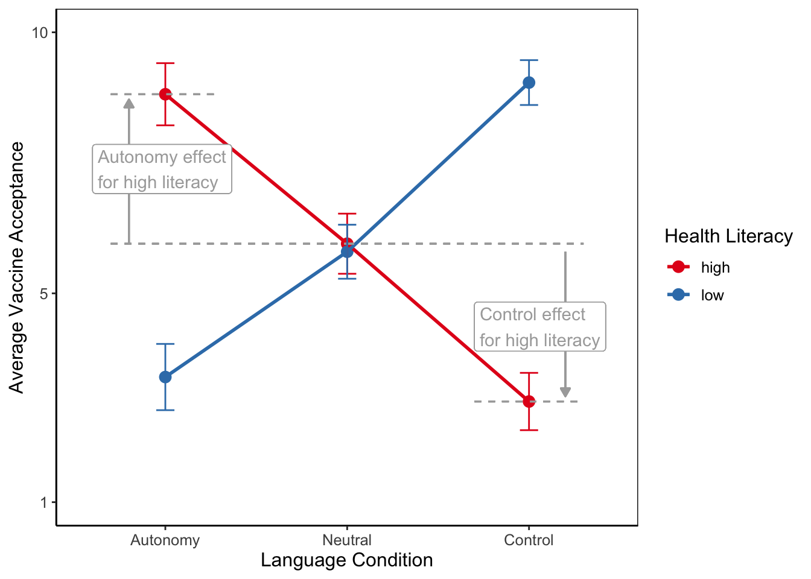
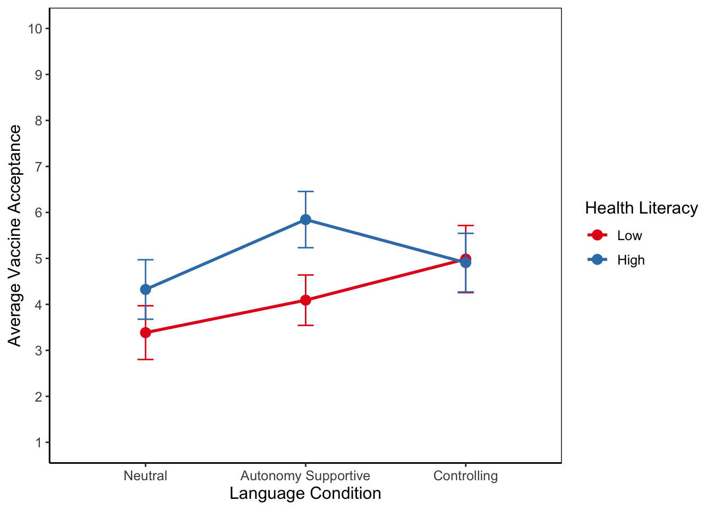

5 Moderation with Analysis of Variance (ANOVA)
Key concepts: eta-squared, between-groups variance, within-groups variance, F test on analysis of variance model, pairwise comparisons, post-hoc tests, one-way analysis of variance, two-way analysis of variance, balanced design, main effects, moderation, interaction effect.
Watch the micro lecture (Video 5.1) on moderation with analysis of variance for an overview of the chapter.
Summary
How do we test mean differences for three or more groups and what if group effects are not the same for all participants?
Imagine you are a health communication researcher. Your goal is to identify the most effective way of persuading people to accept an important new vaccine once it becomes available. Based on theory, you created three versions of a communication campaign aiming to increase vaccine acceptance: The first version of the campaign uses autonomy-supportive language, that is it addresses people in a way that respects their freedom to choose, rather than attempting to pressure or force them to accept the vaccine. The second version of the campaign uses controlling language, that is it attempts to pressure or command people to accept the vaccine, for instance by using threats or guilt-appeals. The third version of the campaign uses neutral language that is neither explicitly autonomy-supportive nor controlling. Version 3 is meant to serve as a control condition. Which communication strategy is most effective?
You suspect that the answer to this question might depend on the characteristics of the person who is exposed to the campaign, such as their health literacy. Health literacy is the extent to which one is skilled in finding, understanding, and using health information to make good decisions about their health. Are those with higher health literacy more likely to be persuaded by a different communication strategy than those with low health literacy?
To find out, you and your team ran an experiment, randomly assigning participants who vary in health literacy (high vs. low) to be exposed to one of the three campaigns. Vaccine acceptance was measured as the main dependent variable after exposure to a randomly assigned campaign.
To identify the most effective campaign, we first need to compare the outcome scores (average vaccine acceptance) across more than two groups (participants who saw the neutral campaign, the autonomy-supportive campaign or the controlling campaign). To this end, we use analysis of variance. The null hypothesis tested in analysis of variance states that all groups have the same average outcome score in the population.
This null hypothesis is similar to the one we test in an independent-samples t test for two groups. With three or more groups, we must use the variance of the group means (between-groups variance) to test the null hypothesis. If the between-groups variance is zero, all group means are equal.
In addition to between-groups variance, we have to take into account the variance of outcome scores within groups (within-groups variance). Within-groups variance is related to the fact that we may obtain different group means even if we draw random samples from populations with the same means. The ratio of between-groups variance over within-groups variance gives us the F test statistic, which has an F distribution.
Differences in average outcome scores for groups on one independent variable (usually called factor in analysis of variance) are called a main effect. A main effect represents an overall or average effect of a factor. If we have only one factor in our model, for instance, the language used in a vaccination campaign, we apply a one-way analysis of variance. With two factors, we have a two-way analysis of variance, and so on.
In our example, we are interested in a second independent variable, namely health literacy. With two or more factors, we can have interaction effects in addition to main effects. An interaction effect is the joint effect of two or more factors on the dependent variable. An interaction effect is best understood as different effects of one factor across different groups on another factor. For example, autonomy supportive language may increase vaccine acceptance for people with high health literacy but controlling language might work best for people with low health literacy.
The phenomenon that a variable can have different effects for different groups on another variable is called moderation. We usually think of one factor as the predictor (or independent variable) and the other factor as the moderator. The moderator (e.g., health literacy) changes the effect of the predictor (e.g., campaign style) on the dependent variable (e.g., vaccine acceptance).
5.1 Different Means for Three or More Groups
Communication scientists have shown that campaign messages are more likely to be effective if they are designed based on theoretical insights (Fishbein and Cappella 2006). For instance, Protection Motivation Theory (Rogers 1975) suggests that controlling language including threats can be persuasive by motivating people to take action to avoid harm and Self-Determination Theory (Deci and Ryan 2013) supports the idea that autonomy-supportive language exerts impact by fostering a sense of choice and personal motivation.
Imagine that we want to test if using theory to design language used in a campaign makes a difference to people’s vaccine acceptance. We will be using either autonomy supportive language or controlling language in the theory-based campaigns, and we will include a campaign with neutral language as a control condition.
Let us design an experiment to investigate the effects of the language used in a campaign (campaign style). We sample a number of people (participants) and then randomly assign each participant to the campaign with autonomy supportive language, the campaign with controlling language, or the campaign with neutral language (control group). Our independent variable campaign style is a factor with three experimental conditions (autonomy supportive, controlling, neutral).
Our dependent variable is vaccine acceptance, a numeric scale from 1 (“Would definitely refuse to get the vaccine”) to 10 (“Would definitely get the vaccine as soon as possible”). We will compare the average outcome scores among groups. If groups with autonomy supportive or controlling language have a systematically higher average vaccine acceptance than the group with neutral language, we conclude that using theory to design campaign language has a positive effect on vaccine acceptance.
In statistical terminology, we have a categorical independent variable (or: factor) and a numerical dependent variable. In experiments, we usually have a very limited set of treatment levels, so our independent variable is categorical. Analysis of variance was developed for this kind of data (Fisher 1919), so it is widely used in the context of experiments.
5.1.1 Mean differences as effects
Figure 5.1 shows the vaccine acceptance scores for twelve participants in our experiment. Four participants saw a campaign with autonomy supportive language, four saw a campaign with contolling language, and four saw a campaign with neutral language.
A group’s average score on the dependent variable represents the group’s score level. The group averages in Figure 5.1 tell us for which campaign style the average vaccine acceptance is higher and for which campaign style it is lower.
Random assignment of participants to experimental groups (here: which campaign is shown) creates groups that are, in theory, equal on all imaginable characteristics except the experimental treatment(s) administered by the researcher. Participants who saw a campaign with autonomy supportive language should have more or less the same average age, knowledge, and so on as participants who saw a campaign with controlling or neutral language. After all, each experimental group is just a random sample of participants.
If random assignment was done successfully, differences between group means can only be caused by the experimental treatment (we will discuss this in more detail in Chapter 8). Mean differences are said to represent the effect of experimental treatment in analysis of variance.
Analysis of variance was developed for the analysis of randomized experiments, where effects can be interpreted as causal effects. Note, however, that analysis of variance can also be applied to non-experimental data. Although mean differences are still called effects in the latter type of analysis, these do not have to be causal effects.
In analysis of variance, then, we are simply interested in differences between group means. The conclusion for a sample is easy: Which groups have higher average scores on the dependent variable and which groups have lower scores? A means plot, such as Figure 5.2, aids interpretation and helps communicating results to the reader. On average, participants who saw a campaign with autonomy supportive or controlling language have higher vaccine acceptance than participants who saw a campaign with neutral language. In other words, our two theory-based campaigns were more effective than the neutral control condition.
Effect size in an analysis of variance refers to the overall differences between group means. We use eta2 as effect size, which gives the proportion of variance in the dependent variable (acceptance of vaccination information) explained or predicted by the group variable (experimental condition).
This proportion is informative and precise. If you want to classify the effect size in more general terms, you should take the square root of eta2 to obtain eta. As a measure of association, eta can be interpreted with the following rules of thumb:
- 0.1 (0 ≤ eta2 < .2) = small or weak effect,
- 0.3 (.2 ≤ eta2 < .4) = medium-sized or moderate effect,
- 0.5 (.4 ≤ eta2) = large or strong effect.
5.1.2 Between-groups variance and within-groups variance
For a better understanding of eta2 and the statistical test of an analysis of variance model, we have to compare the individual scores to the group averages and to the overall average. Figure 5.3 adds overall average acceptance of vaccination information to the plot (horizontal black line) with participants’ scores and average experimental group scores (coloured horizontal lines).
Let us assume that we have measured vaccine acceptance for a sample of 12 participants in our study as depicted in Figure 5.3. Once we have our data, we first have a look at the percentage of variance that is explained, eta2. What does it mean if we say that a percentage of the variance is explained when we interpret eta2?
The variance that we want to explain consists of the differences between the scores of the participants on the dependent variable and the overall or grand mean of all outcome scores. Remember that a variance measures deviations from the mean. The dotted black arrows in Figure 5.3 express the distances between outcome scores and the grand average. Squaring, summing, and averaging these distances over all observations gives us the total variance in outcome scores.
The goal of our experiment is to explain why some of our participants’ vaccince acceptance is far above the grand mean (horizontal black line in Figure 5.3) while others score a lot lower. We hypothesized that participants are influenced by the campaign style (language used) that they have seen. If a certain campaign style has a positive effect, the average acceptance should be higher for participants confronted with this campaign style.
If we know the group to which a participant belongs—which language was used in the campaign they saw—we can use the average outcome score for the group as the predicted outcome for each group member—their vaccine acceptance due to the language used in the campaign they saw. The predicted group scores are represented by the coloured horizontal lines for group means in Figure 5.3.
Now what part of the variance in outcome scores (dotted black arrows in Figure 5.3) is explained by the experimental treatment? If we use the experimental treatment as predictor of vaccine acceptance, we predict that a participant’s acceptance equals their group average (horizontal coloured line) instead of the overall average (horizontal black line), which we use if we do not take into account the participant’s experimental treatment.
So the difference between the overall average and the group average is what we predict and explain by the experimental treatment. This difference is represented by the solid black arrows in Figure 5.3. The variance of the predicted scores is obtained if we average the squared sizes of the solid black arrows for all participants. This variance is called the between-groups variance.
Playing with the group means in Figure 5.3, you may have noticed that eta2 is high if there are large differences between group means. In this situation we have high between-groups variance—large black arrows—so we can predict a lot of the variation in outcome scores between participants.
In contrast, small differences between group averages allow us to predict only a small part of the variation in outcome scores. If all group means are equal, we can predict none of the variation in outcome scores because the between-groups variance is zero. As we will see in Section 5.1.3, zero between-groups variance is central to the null hypothesis in analysis of variance.
The experimental treatment predicts that a participant’s vaccine acceptance equals the average acceptance of the participant’s group. It cannot predict or explain that a participant’s vaccine acceptance score is slightly different from their group mean (the red double-sided arrows in Figure 5.3). Within-groups variance in outcome scores is what we cannot predict with our experimental treatment; it is prediction error. In some SPSS output, it is therefore labeled as “Error”.
5.1.3 F test on the model
Average group scores tell us whether the experimental treatment has effects within the sample (Section 5.1.1). If the group who saw a campaign with controlling language has higher average acceptance of vaccination information than the group who saw a campaign with neutral language, we conclude that using controlling language makes a difference in the sample. But how about the population?
If we want to test whether the difference that we find in the sample also applies to the population, we use the null hypothesis that all average outcome scores are equal in the population from which the samples were drawn. In our example, the null hypothesis states that vaccine acceptance of people in the population does not differ between those exposed to a campaign with autonomy supportive language, one with controlling language, or a campaign with neutral language.
We use the variance in group means as the number that expresses the differences between group means. If all groups have the same average outcome score, the between-groups variance is zero. The larger the differences, the larger the between-groups variance (see Section 5.1.2).
We cannot just use the between-groups variance as the test statistic because we have to take into account chance differences between sample means. Even if we draw different samples from the same population, the sample means will be different because we draw samples at random. These sample mean differences are due to chance, they do not reflect true differences between groups in the population.
We have to correct for chance differences and this is done by taking the ratio of between-groups variance over within-groups variance. This ratio gives us the relative size of observed differences between group means over group mean differences that we expect by chance.
Our test statistic, then, is the ratio of two variances: between-groups variance and within-groups variance. The F distribution approximates the sampling distribution of the ratio of two variances, so we can use this probability distribution to test the significance of the group mean differences we observe in our sample.
Long story short: We test the null hypothesis that all groups have the same population means in an analysis of variance. But behind the scenes, we actually test between-groups variance against within-groups variance. That is why it is called analysis of variance.
5.1.4 Assumptions for the F test in analysis of variance
There are two important assumptions that we must make if we use the F distribution in analysis of variance: (1) independent samples and (2) homogeneous population variances.
5.1.4.1 Independent samples
The first assumption is that the groups can be regarded as independent samples. As in an independent-samples t test, it must be possible in principle to draw a separate sample for each group in the analysis. Because this is a matter of principle instead of how we actually draw the sample, we have to argue that the assumption is reasonable. We cannot check the assumption against the data.
Here is an example of an argument that we can make. In an experiment, we usually draw one sample of participants and, as a next step, we assign participants randomly to one of the experimental conditions. We could have easily drawn a separate sample for each experimental group. For example, we first draw a participant for the first condition: seeing an autonomy supportive campaign. Next, we draw a participant for the second condition, e.g., the controlling campaign. The two draws are independent: whomever we have drawn for the autonomy supportive condition is irrelevant to whom we draw for the controlling condition. Therefore, draws are independent and the samples can be regarded as independent.
Situations where samples cannot be regarded as independent are the same as in the case of dependent/paired-samples t tests (see Section 2.3.6). For example, samples of first and second observations in a repeated measurement design should not be regarded as independent samples. Some analysis of variance models can handle repeated measurements but we do not discuss them here.
5.1.4.2 Homogeneous population variances
The F test on the null hypothesis of no effect (the nil) in analysis of variance assumes that the groups are drawn from the same population. This implies that they have the same average score on the dependent variable in the population as well as the same variance of outcome scores. The null hypothesis tests the equality of population means but we must assume that the groups have equal dependent variable variances in the population.
We can use a statistical test to decide whether or not the population variances are equal (homogeneous). This is Levene’s F test, which is also used in combination with independent samples t tests. The test’s null hypothesis is that the population variances of the groups are equal. If we do not reject the null hypothesis, we decide that the assumption of equal population variances is plausible.
The assumption of equal population variances is less important if group samples are more or less of equal size (a balanced design, see Section 5.3.2). We use a rule of thumb that groups are of equal size if the size of the largest group is less than 10% (of the largest group) larger than the size of the smallest group. If this is the case, we do not care about the assumption of homogeneous population variances.
5.1.5 Which groups have different average scores?
Analysis of variance tests the null hypothesis of equal population means but it does not yield confidence intervals for group means. It does not always tell us which groups score significantly higher or lower.
If the F test is statistically significant, we reject the null hypothesis that all groups have the same population mean on the dependent variable. In our current example, we reject the null hypothesis that average vaccine acceptance is equal for people who saw a campaign with autonomy supportive, controlling or neutral language. In other words, we reject the null hypothesis that the campaign style (or lagnuage used) does not matter to vaccine acceptance.
5.1.5.1 Pairwise comparisons as post-hoc tests
With a statistically significant F test for the analysis of variance model, several questions remain to be answered. Does a controlling campaign style increase or decrease the acceptance of vaccination information? Are both campaign styles equally effective? The F test does not provide answers to these questions. We have to compare groups one by one to see which condition (campaign style) is associated with a higher level vaccine acceptance.
In a pairwise comparison, we have two groups, for instance, participants confronted with an autonomy supportive campaign and participants who saw a campaign with neutral language. We want to compare the two groups on a numeric dependent variable, namely their vaccine acceptance. An independent-samples t test is appropriate here.
With three groups, we can make three pairs: autonomy supportive versus controlling, autonomy supportive versus neutral, and controlling versus neutral. We have to execute three t tests on the same data. We already know that there are most likely differences in average scores, so the t tests are executed after the fact, in Latin post hoc. Hence the name post-hoc tests.
Applying more than one test to the same data increases the probability of finding at least one statistically significant difference even if there are no differences at all in the population. Section 4.7.3 discussed this phenomenon as capitalization on chance and it offered a way to correct for this problem, namely Bonferroni correction. We ought to apply this correction to the independent-samples t tests that we execute if the analysis of variance F test is statistically significant.
The Bonferroni correction divides the significance level by the number of tests that we do. In our example, we do three t tests on pairs of groups, so we divide the significance level of five per cent by three. The resulting significance level for each t test is .0167. If a t test’s p value is below .0167, we reject the null hypothesis, but we do not reject it otherwise.
5.1.5.2 Two steps in analysis of variance
Analysis of variance, then, consists of two steps. In the first step, we test the general null hypothesis that all groups have equal average scores on the dependent variable in the population. If we cannot reject this null hypothesis, we have too little evidence to conclude that there are differences between the groups. Our analysis of variance stops here, although it is recommended to report the confidence intervals of the group means to inform the reader. Perhaps our sample was just too small to reject the null hypothesis.
If the F test is statistically significant, we proceed to the second step. Here, we apply independent-samples t tests with Bonferroni correction to each pair of groups to see which groups have significantly different means. In our example, we would compare the autonomy supportive and controlling groups to the group with neutral language to see if a strong campaign style increases acceptance of vaccination information, and, if so, how much. In addition, we would compare the autonomy supportive and controlling groups to see if one campaign style is more effective than the other.
5.1.5.3 Contradictory results
It may happen that the F test on the model is statistically significant but none of the post-hoc tests is statistically significant. This mainly happens when the p value of the F test is near .05. Perhaps the correction for capitalization on chance is too strong; this is known to be the case with the Bonferroni correction. Alternatively, the sample can be too small for the post-hoc test. Note that we have fewer observations in a post-hoc test than in the F test because we only look at two of the groups.
This situation illustrates the limitations of null hypothesis significance tests (Section 4.7). Remember that the 5 per cent significance level remains an arbitrary boundary and statistical significance depends a lot on sample size. So do not panic if the F and t tests have contradictory results.
A statistically significant F test tells us that we may be quite confident that at least two group means are different in the population. If none of the post-hoc t tests is statistically significant, we should note that it is difficult to pinpoint the differences. Nevertheless, we should report the sample means of the groups (and their standard deviations) as well as the confidence intervals of their differences as reported in the post-hoc test. The two groups that have most different sample means are most likely to have different population means.
5.2 One-Way Analysis of Variance in SPSS
5.2.1 Instructions
In the video below we walk you through conducting and interpreting a one-way analysis of variance in SPSS. In this example, you are again part of a communication research team, however this team we are diving into a persuasive communication question. The research question that is discussed in the video below is ‘does the person endorsing a campaign matter to the willingness to donate to a charity for people seeing the campaign?’. The data set includes the variable endorser, which is a categorical variable. Participants are either watching a campaign with George Clooney, Angelina Jolie or nobody (that is, not a celebrity). You are researching whether the endorser of a fundraising campaign has an effect on people’s willingness to donate. The willigness to donate has been measured before (willing_pre) and after (willing_post) watching the campaign.
When we want to research the effect of a categorical variable (endorser) on a numerical variable (willing_post), we use a one-way analysis of variance (see the test selection table Section 4.4). You can get the one-way ANOVA window by clicking Analyze > Compare Means > One-Way ANOVA. The dependent variable is the willignness to donate after watching the campaign, so this variable should be added to the Dependent List:. The independent variable, also called factor in ANOVA, is the celebrity endoring the campaign which should be added to Factor:. Before running your ANOVA, we select some additional options. Select Post Hoc... and select the Bonferroni correction for multiple testing. Under Options... we select Descriptive to obtain the group means and Homogeneity of variance test for Levene’s F-test to check assumptions. You would only select bootstrapping if you cannot use the theoretical approximation for the F-distribution (revise Chapter 2 if needed). You can select Estimate effect size for overall tests if you want to obtain eta2. Please click paste and run the command from your syntax.
In addition to the SPSS analysis, it is always a good idea to visualize the results of your analysis. You can do this by creating a means plot with error bars to clearly show the differences between the groups. Video 5.3 below shows you how to create a means plot in SPSS.
In the output we can start interpreting our results. Video 5.4 runs us through the interpretation of the output. The first table, Descriptives provides us with the group means. Here we can immediately see that the willingness to donate is lower when there is no celebrity endorsing the campaign. In this table we can also check the group sizes, an assumption for ANOVA, the sizes are fairly equal (45, 49, 49). You can see that the Test of Homogeneity of Variances is not significant indicating the assumption is met on both fronts (equal group sizes and equal variances).
To interpret the actual test results, we study the ANOVA table. We can see the between groups and within groups results, you find the F-value in the Between Groups row, with a p-value below .05 indicating a significant result. The table below the ANOVA table, ANOVA Effect Sizes provides an insight in the size of the effect - i.e., the size of the difference between the groups. Eta-squared is the effect size that we report for ANOVA, as reported in the video all versions above SPSS v26 show the partial eta-squared meaning that you need to calculate eta-squared by hand. We will walk you through this process later in this chapter.
As said we have found a significant F-value indicating that there is a significant difference between the groups. We have a factor with three groups (Clooney, Jolie and Nobody) thus we need further analysis to tell which group(s) differ. For this we inspect the Post Hoc Tests, in the table `Multiple Comparisons. Here you can see the results of several t-tests (as you might remember from Section 4.4 we can compare two groups on a numerical variable with a t-test). The p-values in this table are corrected for capitalizartion on chance due to multiple testing (that is why we selected Bonferroni earlier). These results show us that the groups Nobody and Clooney differ significantly from each other, and so do the groups Nobody and Jolie (i.e., both comparisons have a p-value below .05 and the confidence interval does not include the zero). The difference between Clooney and Jolie is not significant (i.e., the p-value is larger than .05 and the confidence interval includes the zero). It can help to also take a look at the Means Plots which allows you to visualize the effects.
5.3 Different Means for Two Factors
The participants in the experiment do not only differ because they see different campaign styles. In addition, personal characteristics could impact how participants perceive each campaign. In our example, we are particularly interested in participants’ health literacy, categorizing the participants in two groups: low and high health literacy. We can then ask the question: Does the effect of the language used in campaigns on vaccine acceptance differ between people with low and those with high health literacy?
In the preceding section, we have looked at the effect of a single factor on acceptance of vaccination information, namely, the language used in a campaign to which participants are exposed. Thus, we take into account two variables: one independent variable and one dependent variable. This is an example of bivariate analysis.
Usually, however, we expect an outcome to depend on more than one variable. Vaccine acceptance does not only depend on the language used in a campaign. It is easy to think of more factors, such as a person’s previous experience with vaccines, their personal health, their beliefs, and so on.
It is straightforward to include more factors in an analysis of variance. These can be additional experimental treatments in the context of an experiment as well as participant characteristics that are not manipulated by the researcher. For example, we may hypothesize that people with high health literacy are generally more accepting of vaccines than people with low health literacy.
5.3.1 Two-way analysis of variance
If we use one factor, the analysis is called one-way analysis of variance. With two factors, it is called two-way analysis of variance, and with three factors… well, you probably already guessed that name. An analysis of variance with two or more factors can also be called a multi-way or factorial analysis of variance.
A two-way analysis of variance using a factor with three levels, for instance, exposure to three different campaign styles, and a second factor with two levels, for example, low versus high health literacy, is called a 3x2 (say: three by two) factorial design.
5.3.2 Balanced design
In analysis of variance with two or more factors, we aim to have a balanced design. A balanced design in analysis of variance exists when there is an equal number of observations. It is important that this equal number of observations exists across every combination of factor levels. This means that each group being compared in the analysis has the same number of data points (in our case: participants). In an experiment, we can ensure a balanced design if we have the same number of participants in each combination of levels on all factors. In other words, a factorial design is balanced if we have the same number of observations in each subgroup. A subgroup contains the participants that have the same level on both factors just like a cell in a contingency table.
Balanced designs are important because they lead to more robust results. In addition, a balanced design indicates statistical independence. Statistical independence entails that the factors do not influence each other, meaning that the effect of one factor does not change based on the level of another factor. In other words, knowing the value or effect of one factor provides no information about the value of the other factor. We aim for statistical independence in analysis of variance.
| High.Health.Literacy | Low.Health.Literacy | |
|---|---|---|
| Autonomy | 2 | 2 |
| Control | 2 | 2 |
| Neutral | 2 | 2 |
Table 5.1 shows an example of a balanced 3x2 factorial design. Each subgroup (cell) contains two participants (cases). Equal distributions of frequencies across columns or across rows indicate a balanced design. In the example, we see a balanced design with equal distributions across columns (and rows). This means that the factors are statisically independent.
In practice, it may not always be possible to have exactly the same number of observations for each subgroup. A participant may drop out from the experiment, a measurement may go wrong, and so on. If the numbers of observations are more or less the same for all subgroups, the factors are nearly independent, which is okay. We can use the same rule of thumb for a balanced design as for the conditions of an F test in analysis of variance: If the size of the smallest subgroup is less than ten per cent smaller than the size of the largest group, we call a factorial design balanced.
An example: if Table 5.1 would read 10-9-9 for both columns, the largest subgroup exists of 10 participants. Ten per cent of the largest group (10) is one participant. The smallest group (9) differs the maximum of 1 participant from the largest group. Thus the design would still be balanced. If one group would exist of eight participants, the difference of two participants would exceed the ten per cent of one participant and therefore be unbalanced.
A balanced design is desired but not necessary. Unbalanced designs can be analyzed but estimation is more complicated (a problem for the computer, not for us) and the assumption of equal population variances for all groups (Levene’s F test) is more important (a problem for us, not for the computer) because we do not have equal group sizes. Note that the requirement of equal group sizes applies to the subgroups in a two-way analysis of variance. With a balanced design, we ensure that we have the same number of observations in all subgroups, so we are on the safe side.
5.3.3 Main effects in two-way analysis of variance
A two-way analysis of variance tests the effects of both factors on the dependent variable in one go. It tests the null hypothesis that people exposed to an autonomy supportive campaign have the same average vaccine acceptance in the population as people exposed to a controlling campaign and as those who are exposed to a neutral campaign. It also tests the null hypothesis that people with low health literacy and people with high health literacy have the same average vaccine acceptance in the population.


The tested effects are main effects because they represent the effect of one factor. They express an overall or average difference between the mean scores of the groups on the dependent variable. The main effect of the campaign style factor shows the mean differences for campaign groups if we do not distinguish between low and high health literacy. Likewise, the main effect for health literacy shows the average difference in vaccine acceptance between those with low and those with high health literacy without taking into account the language used in the campaign to which they were exposed.
We could have used two separate one-way analyses of variance to test the same effects. Moreover, we could have tested the difference between low and high health literacy with an independent-samples t test. The results would have been the same (if the design is balanced.) But there is an important advantage to using a two-way analysis of variance, to which we turn in the next section.
5.4 Moderation: Group-Level Differences that Depend on Context
In the preceding section, we have analyzed the effects both of campaign style and health literacy on vaccine acceptance. The two main effects isolate the influence of campaign style on acceptance of vaccination information from the effect of health literacy and the other way around.
But does campaign style always have the same effect? Even if there is a main effect of campaign style on vaccine acceptance across all participants, it is possible that this effect differs when we are zooming in to specific sub-groups of our sample, for instance comparing people high and those with low health literacy. In other words, do people with high and people with low health literacy differ in their response to different campaign styles? For instance, people with a health literacy might feel confident in their ability to find and use health information in order to make their own, informed decisions about health behaviors like vaccination. These individuals might prefer autonomy-supportive over controlling communication styles. Individuals with low health literacy might not show this preference for autonomy-supportive language as they might feel less confident to use that autonomy to make complicated decisions on their own. Thus, we could expect that the effect of campaign style differs between those with high and low health literacy.
If the effect of a factor is different for different groups on another factor, the first factor’s effect is moderated by the second factor. The phenomenon that effects are moderated is called moderation. Both factors are independent variables. To distinguish between them, we will henceforth refer to them as the predictor (here: campaign style) and the moderator (here: health literacy).
With moderation, factors have a combined effect. The context (group score on the moderator) affects the effect of the other predictor on the dependent variable. The conceptual diagram for moderation expresses the effect of the moderator on the effect of the predictor as an arrow pointing at another arrow. Figure 5.8 shows the conceptual diagram for participant’s health literacy moderating the effect of campaign style on vaccine acceptance.

5.4.1 Types of moderation
Moderation as different effects for different groups is best interpreted using a cross-tabulation of group means, which is visualized as a means plot. In a group means table, the Totals row and column contain the means for each factor separately, for example the means for low and high (factor health literacy) or the means for the language used in the campaigns (factor campaign style). These means represent the main effects. In contrast, the means in the cells of the table are the means of the subgroups, which represent moderation. Draw them in a means plot for easy interpretation.
In a means plot, we use the groups of the predictor on the horizontal axis, for example, the three camapign styles. The average score on the dependent variable is used as the vertical axis. Finally, we plot the average scores for every predictor-moderator group, for instance, an campaign-literacy combination, and we link the means that belong to the same moderator group, for example, the means for people with high and the means for people with low health literacy (Figure 5.9).
Moderation happens a lot in communication science for the simple reason that the effects of messages are stronger for people who are more susceptible to the message. If you know more people who have adopted a new product or a healthy/risky lifestyle, you are more likely to be persuaded by media campaigns to also adopt that product or lifestyle. If you are more impressionable in general, media messages are more effective.
5.4.1.1 Effect strength moderation
Moderation refers to contexts that strengthen or diminish the effect of, for instance, a media campaign. Let us refer to this type of moderation as effect strength moderation. In our current example, we would hypothesize that the effect of using controlling language is stronger for participants with low health literacy than for participants with high health literacy.
In analysis of variance, effects are differences between average outcome scores. The effect of controlling language on vaccine acceptance, for instance, is the difference between the average vaccine of participants exposed to controlling language and the average score of participants who were exposed to a campaign with neutral language.
Different effects of controlling language for participants with low and participants with high health literacy imply different differences! The difference in average vavvince acceptance scores between people with low health literacy exposed to controlling language and people with low health literacy who are exposed to neutral language is different from the difference in average acceptance scores for people with high health literacy. We have four subgroups with average acceptance scores that we have to compare. We have six subgroups if we also include the autonomy supportive effect.

A means plot is a very convenient tool to interpret different differences. Connect the means of the subgroups by lines that belong to the same group on the factor you use as moderator. Each line in the plot represents the effect differences within one moderator group. If a line goes up or down, predictor groups have different means, so the predictor has an effect within that moderator group. A flat (horizontal) line tells us that there is no effect at all within that moderator group
The distances between the lines show the difference of the differences. If the lines for people with low and people with high health literacy are parallel, the difference between campaign styles is the same for people with low and people with high health literacy. Then, the effects are the same and there is no moderation. In contrast, if the lines are not parallel but diverge or converge, the differences are different for people with low and people with high health literacy and there is moderation.
A special case of effect strength moderation is the situation in which the effect is absent (zero) in one context and present in another context. A trivial example would be the effect of an anti-smoking campaign on smoking frequency. For smokers (one context), smoking frequency may go down with campaign exposure and the campaign may have an effect. For non-smokers (another context), smoking frequency cannot go down and the campaign cannot have this effect.
Except for trivial cases such as the effect of anti-smoking campaigns on non-smokers, it does not make much sense to distinguish sharply between moderation in which the effect is strengthened and moderation in which the effect is present versus absent. In non-trivial cases, it is very rare that an effect is precisely zero. (See Holbert and Park (2019) for a different view on this matter.)
5.4.1.2 Effect direction moderation
In the other type of moderation, the effect in one group is the opposite of the effect in another group. In Figure 5.11, for example, autonomy supportive language increases the average vaccine acceptance among people with high health literacy in comparison to the group who was exposed to neutral language. In contrast, average acceptance for people with low health literacy exposed to the autonomy supportive campaign is lower than the average for people with low health literacy exposed to the campaign with neutral language. Let us call this effect direction moderation. People with low health literacy reverse the autonomy supportive effect that we find for people with high health literacy.

In an extreme situation, the effect in one group can compensate for the effect in another group if it is about as strong but of the opposite direction (Figure 5.12). Imagine that controlling language convinces people with low health literacy to accept vaccination by giving them the confident guidance they need but discourages people with high health literacy to accept vaccination because it robs them of their independence. In contrast, autonomy supportive language could work better for people with high health literacy, because it preserves their freedom to make their own decision, but discourage people with low health literacy, because it does not meet their need for clarity.

In this situation, the main effect of campaign style on vaccine acceptance is close to zero. If we average over people with low and people with high health literacy, we obtain the means represented by the three grey dots. There is no net difference between autonomy supportive, controlling, and neutral language used in a campaign.
This does not mean that the campaign style does not matter. On the contrary, the interaction effect tells us that one campaign style is effective for one group but counterproductive for another group. The second part of the conclusion is just as important as the first part. The campaigner should avoid decreasing the vaccine acceptance among particular target groups.
5.4.2 Testing main and interaction effects
The effect of a single factor is called a main effect, as we learned in Section 5.3.3. A main effect reflects the difference between means for groups within one factor. The main effect of health literacy, for instance, could be that people with high health literacy are, on average, more willing to accept vaccination than people with low health literacy. A two-way analysis of variance includes two main effects, one for each factor (see Section 5.3.1), for example a main effect of health literacy and a main effect of campaign style.
For moderation, however, we compare average scores of subgroups. For instance, people exposed to the controlling language campaign can be split into two sub-groups: those with high or low health literacy. Expressed more formally, sub-groups combine a level on one factor with a level on another factor. In Figure 5.13, we compare average vaccine acceptance for combinations of campaign style and participant’s health literacy. The effect of differences among subgroups on the dependent variable is called an interaction effect. Just like a main effect, an interaction effect is tested with an F test and its effect size is expressed by eta2.
Interpretation of moderation requires some training because we must look beyond main effects. The fact that people with high health literacy score on average higher than people with low health literacy is irrelevant to moderation but it does affect all subgroup mean scores. So the fact that the red line is above the blue line in Figure 5.13 is not relevant to moderation.
Moderation concerns the differences between subgroups that remain if we remove the overall differences between groups, that is, the differences that are captured by the main effects. The remaining differences between subgroup average scores provide us with a between-groups variance. In addition, the variation of outcome scores within subgroups yields a within-groups variance. Note that within-groups variance is not visible in Figure 5.13 because the vaccine acceptance scores of the individual participants are not shown.
We can use the between-groups and within-groups variances to execute an F test just like the F test we use for main effects. The null hypothesis of the F test on an interaction effect states that the subgroups have the same population averages if we correct for the main effects. Our statistical software takes care of this correction if we include the main effects in the model, which we should always do.
Alternatively, we can formulate the null hypothesis of the test on the interaction effect as equal effects of the predictor for all moderator groups in the population. In the current example, the null hypothesis could be that the effect of campaign style is the same for both levels of health literacy in the population. Or, that the effect of health literacy is the same for different campaign styles in the population.
Null hypothesis of the test on the interaction effect: equal effects of the predictor for all moderator groups in the population.
Moderation between three or more factors is possible. These are called higher-order interactions. It is wise to include all main effects and lower-order interactions if we test a higher-order interaction. As a result, our model becomes very complicated and hard to interpret. If a (first-order) interaction between two predictors must be interpreted as different differences, an interaction between three factors must be interpreted as different differences in differences. That’s difficult to imagine, so let us avoid them.
5.4.3 Assumptions for two-way analysis of variance
The assumptions for two-way analysis of variance are the same as for one-way analysis of variance (Section 5.1.4). Just note that equal group sizes and equal population variances now apply to the subgroups formed by the combination of the two factors.
5.5 Reporting Two-Way Analysis of Variance
The main purpose of reporting a two-way analysis of variance is to show the reader the differences between average group scores on the dependent variable between groups on the same factor (main effects) and different differences for groups on a second factor (interaction effect). A means plot is very suitable for this purpose. Conventionally, we place the predictor groups on the horizontal axis and we draw different lines for the moderator groups. But you can switch them if this produces a more appealing graph.

For the statistically informed reader, you should include the following information somewhere in your report:
That you used analysis of variance and the analysis of variance type (one-way, two-way, or multi-way).
The test results for every effect, consisting of the test name (F), the degrees of freedom, and the significance (p-value). APA prescribes the following format if you report the test result within your text: F (df1, df2) = F-value, p = p-value. Note that df1 is the degrees of freedom of the factor (between-groups) and df2 is the degrees of freedom of the error (within-groups).
For each effect report eta-squared (eta2) and interpret it in terms of effect size. If you have to calculate eta-squared by hand, divide the between-groups sum of squares of an effect by the total sum of squares (SPSS: corrected total). If SPSS calculates eta-squared, also report the confidence interval for eta-squared.
For each effect worth interpretation, clarify which group or subgroup scores higher. Report the group means and their standard deviations or the mean difference with its confidence interval and p-value (from the post-hoc tests) here. Note that the SPSS menu only supplies post-hoc tests for main effects of factors with more than two levels (groups).
Pay special attention to an interaction effect. Explain how an effect (differences between groups) of the predictor differs across groups on the moderator. This results in sentences containing three variables. For example: “Autonomy supportive language increases acceptance of vaccination information more among people with high health literacy than among people with low health literacy.” Do you recognize the three variables (predictor, moderator, and dependent variable) here?
As always, do not forget to mention the units (cases) and the meaning of the variables (factors and outcome). They describe the topic of the analysis.
Report it if the main assumption is violated, that is, if you have (sub)groups of unequal size (i.e., an unbalanced design) and the test on homogeneous variances (Leven’s F-test) is statistically significant. Report Levene’s test just like you report the F test of a main effect (see above). If the assumption is violated, we still report and interpret the results of the analysis of variance but we warn that the results may not be trustworthy and should be treated with caution.
A two-way analysis of variance may produce many numeric results to report. It is recommended to present them as a table (in the text or in an appendix). If you report the table, include the error, the sums of squares and mean squares in the same way that SPSS reports them. Table 5.2 presents an example.
| Sum of Squares | df | Mean Square | F | p | |
|---|---|---|---|---|---|
| health literacy | 26.37 | 1 | 26.37 | 11.86 | 0.001 |
| language condition | 38.05 | 2 | 19.03 | 8.56 | < 0.001 |
| language condition*health literacy | 20.60 | 2 | 10.30 | 4.63 | 0.011 |
| error | 304.54 | 137 | 2.22 | ||
| Total | 389.56 | 142 |
An example of a table summarizing results of a two-way analysis of variance.
5.6 Two-Way Analysis of Variance in SPSS
5.6.1 Instructions
You have learned how to execute an one-way analysis of variance, and now it is time to execute a two-way analysis of variance in SPSS.
In SPSS, we use the Univariate option in the General Linear Model submenu for two-way analysis of variance.
The significance tests on the main effects and interaction effect are reported in the Tests of Between-Subjects Effects table. Figure 5.15 offers an example. The tests on the main effects are in the red box and the green box contains the test on the interaction effect. The APA-style summary of the main effect of campaign style (variable: lang_cond) is: F (2, 137) = 8.43, p < .001, eta2 = .10. Note the two degrees of freedom in between the brackets, which are marked by a blue ellipse in the figure. You get the effect size eta2 by dividing the sum of squares of an effect by the corrected total sum of squares (in purple ellipses in the figure): 37.456 / 389.566 = 0.10.
Interpret the effects by comparing mean scores on the dependent variable among groups:
If there are two groups on a factor, for example, low and high health literacy, compare the two group means: Which group scores higher? For example, people with high health literacy score on average 5.05 on vaccine acceptance whereas the average acceptance is only 4.19 for people with low health literacy. The F test shows whether or not the difference between the two groups is statistically significant.
If a factor has more than two groups, for example, neutral, controlling or autonomy supportive language, use post-hoc comparisons with Bonferroni correction. The results tell you which group scores on average higher than another group and whether the difference is statistically significant if we correct for capitalization on chance.
If you want to interpret an interaction effect, create means plots such as Figure 5.16. Compare the differences between means across groups. In the left panel, for example, we see that the effect of health literacy on acceptance of vaccination information (the difference between the mean score of people with low health literacy and the mean score of people with high health literacy) is larger for autonomy supportive language (pink box in the middle) than for neutral language (pink box on the left), and it is smallest for controlling language (pink box on the right). Similarly, we see that the effect of seeing the autonomy supportive campagin instead of the neutral campaign is larger for people with high healthy literacy (right-hand panel, pink box on the right) than for people with low health literacy (right-hand panel, pink box on the left).
In the video below we walk you through how to perform and interpret a two-way analysis of variance in SPSS. In the video we will elaborate on the dataset that we have used for our one-way analysis of variance (does the endorser for a fundraiser campaign have an effect on the willingness to donate?). The persuasive communication research team is adding a second variable, a moderator: gender (in the dataset called ‘sex’). This study is only taking men and women into account (in the dataset called ‘male’ and ‘female’). When conducting a two-way analysis of variance we are able to answer the questions whether the effect of endorser on willingness to donate is different for men and women. We have two categorical independent variables (or factors) and one numerical dependent variable (follow the test selection table to a two-way analysis of variance Section 4.4).
To perform a two-way (or multi-way) analysis of variance, we select Analyze > General Linear Model > Univariate. The numerical dependent variable willing_post is added to Dependent Variable: and the categorical factors endorser and sex are added to the Fixed Factor(s):. If you see the variable labels instead of the variable names, simply do a right mouse click and select show variable names. For our additional setting, we select Plots... and add the predictor (endorser) to the Horizontal Axis: and the moderator (sex) to Seperate Lines:. As stated earlier in this chapter, we usually add the moderator as separate lines but if you have good reason to switch them (e.g., easier interpretation): you can. Do not forget to click Add and Continue. As before we also select Post Hoc..., we only need to add endorser since sex only consist of two groups. Hopefully you remember we see t-test results in our post hoc table, meaning we are comparing two groups, this is not necessary to do when the variable only has two groups to begin with. Thus, add endorser to Post Hoc Tests for:, select Bonerroni and click Continue. Under options we select Descriptive statistics (for our group means) and homogeneity tests (for Levene’s F-test for our assumption check). Then, as always, click paste and run the command through the syntax.
In addition to the analysis we would also like to visualize the the results. We again use the chart builden in SPSS. Video 5.6 shows you how to visualize the interaction effect and how to add error bars to interpret the results.
When we inspect the output in Video 5.7, we start with the first tables including Descriptive Statistics. In this table all the group means are provided and we can check whether we have equal subgroup sizes (meaning a balanced design, indicating statistical independence for our variables). The subgroup sizes range from 22 to 25, our largest group (25) indicates an allowed difference of 2.5. The difference of 3 participants is slightly above our allowed difference. This means we also take a look at the Levene’s F-test in the next table. The table shows a not significant results (the p-value is above .05), meaning we have met our assumption of equal variances.
For the actual test results, we take a look at the table of Tests of Between-Subjects Effects. Here we can see that both the main effects (rows: endorser and sex) are significant and so does the interaction effect (row: endorsersex). If you want to know more about these effects, we can look at the Descriptive Statistics table to check the means of the variable sex. Here we can see that participants who identified as female have a higher average willingness to donate than participants who identified as male. When we want to know more about the endorser effect, we take a look at the Post Hoc Tests in the table Multiple Comparisons where we can find our t-tests. Like the one-way analysis of variance had already showed us: the groups Clooney* and Nobody and Jolie and Nobody differ significantly from each other (the p-values are below .05 and the confidence intervals do not include the zero). To make sense of the significant interaction effect, it usually helps to tak e alook at the Profile Plots. Here the lines represent the two groups of our moderator, you can see that the green line is almost always above the blue line (representing the women having a higher average willingness to donate than the men). The effect of seeing George Clooney in the campaign is positive for both groups of our moderator (both average willingness to donate scores go up), but the effect is stronger for the women. The effect of seeing Angelina Jolie is positive for both groups of our moderator compared to the Nobody group, but for women we see that George Clooney has a stronger effect than Angelina Jolie and for men we see that Angelina Jolie has a stronger effect than George Clooney.
In conclusion, there is a significant main effect for the endorser in a fundraiser campaign on the willingness to donate. Seeing a celebrity has a signigicant positive effect on the willingness to donate compared to seeing no celebrity. There is also a significant main effect for a person’s gender, when comparing men and women we see that women on average have a significantly higher willigness to donate than men. Additionally, there is a significant interaction effect for endorser and gender on willigness to donate. More specifically, seeing a celebrity has a positive effect on both men and women but women seem to have a stronger positive effect when seeing George Clooney than when they see Angelina Jolie and men have a stronger positive effect when seeing Angelina Jolie than when they see George Clooney.
Please watch the video below for step-by-step instructions and for additional details.
We told you before that you had to calculate eta-squared (eta2) yourself if you are working with a SPSS version above 26. We are assuming all of you are, so in the video below we show you the calculation of eta2. Eta-squared is the measure of association, or effect size, belonging to ANOVA. We need the Test of Between-Subjects Effects table in the ANOVA output to calculate eta2. You devide the Sum of Squares for the between groups by the total Sum of Squares (SS). We calculate eta2per effect. Thus, if we want to calculate eta2 for the interaction effect we devide the SS for the interaction effect (20.602) by the total SS (389.566). Beware we use the correctal total here. The eta2 for the interaction effect is 0.05 (or 5,3% of the variance in willingness to donate is explained by the interaction effect).
Watch the video below for a step-by-step instruction for calculating the eta2 of the endorser main effect and the visual details.
5.7 Take-Home Points
In analysis of variance, we test the null hypothesis that all groups have the same population means. Behind the scenes, we actually test the ratio of between-groups variance to within-groups variance.
The overall differences in average outcome scores between groups on one factor (independent variable) are a main effect in an analysis of variance.
The differences in average outcome scores between subgroups, that is, groups that combine a level on one factor (predictor) and a level on another factor (moderator), represent an interaction effect. Note that we are dealing with the differences between subgroup scores that remain after the main effects have been removed.
Moderation is the phenomenon that an effect is different in different contexts. The effect can be stronger or it can have a different direction. In analysis of variance, interaction effects represent moderation.
Eta-squared measures the size of a main or interaction effect in analysis of variance. It tells us the proportion of variance in the dependent variable that is accounted for by the effect.
A means plot is very helpful for interpreting and communicating results of an analysis of variance.
The F tests in analysis of variance do not tell us which groups have different average scores on the dependent variable. To this end, we use independent-samples t tests as post-hoc tests with a (Bonferroni) correction for capitalization on chance.
To apply analysis of variance, we need a numeric dependent variable that has equal population variance in each group of a factor or each subgroup in case of an interaction effect. However, equality of population variances is not important if all groups on a factor or all subgroups in an interaction are more or less of equal size (the largest count is at most 10% of the largest count larger than the smallest count.)